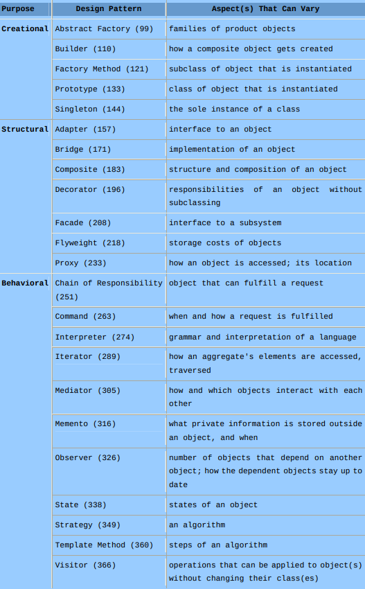
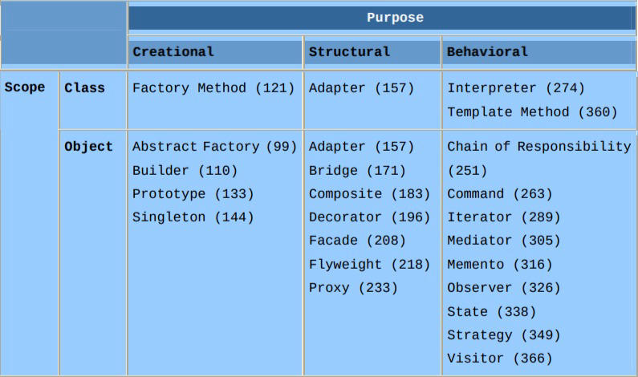

One minute
Overview
An general overview of the Design Patterns.
Classification
Purpose
Purpose reflects the use case of a design pattern.
Creational Pattern concerns the process of object creation.
Structural Pattern deals with the composition of classes or objects.
Behavioral Pattern characterizes the ways in which classes or objects interact and distribute responsibility.

Catalog of design patterns based on Purpose.
Scope
The scope of a design patterns specifies where it is primarily applied.
Class Pattern deals with relationships between classes and their sub-classes. They are established through inheritance, and are therefore statically bound during compile-time.
Object Pattern deals with object relationships. They are established during run-time, and are therefore dynamic and changeable.

Catalog of design patterns based on Scope.
Creational Class Pattern defers some part of object creation to child classes, while Creational Object Pattern defers it to another object.
Structural Class Pattern uses inheritance to compose classes, while Structural Object Pattern describes ways to assemble objects.
Behavioral Class Pattern uses inheritance to describe algorithms and flow of control, whereas Behavioral Object Pattern describes how a group of objects cooperate to perform a task that no single object can carry out alone.